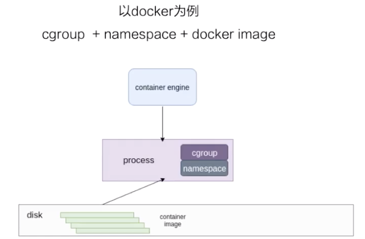
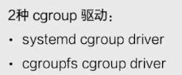
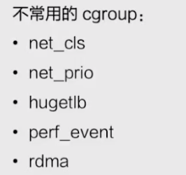
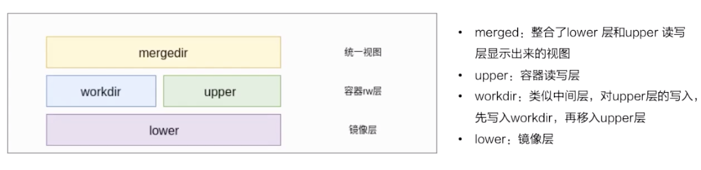
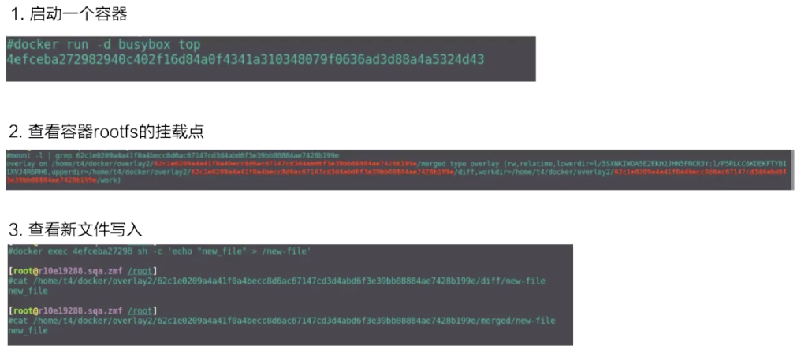
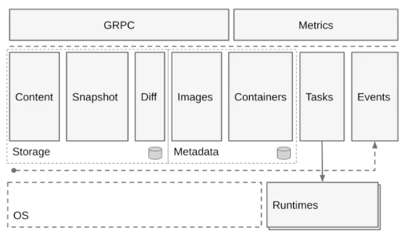

- 01 第一堂“云原生”课.md.html
- 02 容器基本概念.md.html
- 03 Kubernetes 核心概念.md.html
- 04 理解 Pod 和容器设计模式.md.html
- 05 应用编排与管理：核心原理.md.html
- 06 应用编排与管理.md.html
- 07 应用编排与管理：Job & DaemonSet.md.html
- 08 应用配置管理.md.html
- 09 应用存储和持久化数据卷：核心知识.md.html
- 10 应用存储和持久化数据卷：存储快照与拓扑调度(至天).md.html
- 11 可观测性：你的应用健康吗？（莫源）.md.html
- 12 可观测性-监控与日志（莫源）.md.html
- 13 Kubernetes 网络概念及策略控制（叶磊）.md.html
- 14 Kubernetes Service（溪恒）.md.html
- 15 从 0 开始创作云原生应用（殷达）.md.html
- 16 深入解析 Linux 容器（华敏）.md.html
16 深入解析 Linux 容器（华敏）
前两个部分就是资源隔离和限制还有容器镜像的构成，第三部分会以一个业界比较成熟的容器引擎为例去讲解一下容器引擎的构成。
容器
容器是一种轻量级的虚拟化技术，因为它跟虚拟机比起来，它少了一层 hypervisor 层。先看一下下面这张图，这张图简单描述了一个容器的启动过程。

最下面是一个磁盘，容器的镜像是存储在磁盘上面的。上层是一个容器引擎，容器引擎可以是 docker，也可以是其它的容器引擎。引擎向下发一个请求，比如说创建容器，然后这时候它就把磁盘上面的容器镜像，运行成在宿主机上的一个进程。
对于容器来说，最重要的是怎么保证这个进程所用到的资源是被隔离和被限制住的，在 Linux 内核上面是由 cgroup 和 namespace 这两个技术来保证的。接下来以 docker 为例，来详细介绍一下资源隔离和容器镜像这两部分内容。
一、资源隔离和限制
namespace
namespace 是用来做资源隔离的，在 Linux 内核上有七种 namespace，docker 中用到了前六种。第七种 cgroup namespace 在 docker 本身并没有用到，但是在 runC 实现中实现了 cgroup namespace。
我们先从头看一下：
- 第一个是 mout namespace。mout namespace 就是保证容器看到的文件系统的视图，是容器镜像提供的一个文件系统，也就是说它看不见宿主机上的其他文件，除了通过 -v 参数 bound 的那种模式，是可以把宿主机上面的一些目录和文件，让它在容器里面可见的。
- 第二个是 uts namespace，这个 namespace 主要是隔离了 hostname 和 domain。
- 第三个是 pid namespace，这个 namespace 是保证了容器的 init 进程是以 1 号进程来启动的。
- 第四个是网络 namespace，除了容器用 host 网络这种模式之外，其他所有的网络模式都有一个自己的 network namespace 的文件。
- 第五个是 user namespace，这个 namespace 是控制用户 UID 和 GID 在容器内部和宿主机上的一个映射，不过这个 namespace 用的比较少。
- 第六个是 IPC namespace，这个 namespace 是控制了进程兼通信的一些东西，比方说信号量。
- 第七个是 cgroup namespace，上图右边有两张示意图，分别是表示开启和关闭 cgroup namespace。用 cgroup namespace 带来的一个好处是容器中看到的 cgroup 视图是以根的形式来呈现的，这样的话就和宿主机上面进程看到的 cgroup namespace 的一个视图方式是相同的。另外一个好处是让容器内部使用 cgroup 会变得更安全。
这里我们简单用 unshare 示例一下 namespace 创立的过程。容器中 namespace 的创建其实都是用 unshare 这个系统调用来创建的。
上图上半部分是 unshare 使用的一个例子，下半部分是我实际用 unshare 这个命令去创建的一个 pid namespace。可以看到这个 bash 进程已经是在一个新的 pid namespace 里面，然后 ps 看到这个 bash 的 pid 现在是 1，说明它是一个新的 pid namespace。
cgroup
两种 cgroup 驱动
cgroup 主要是做资源限制的，docker 容器有两种 cgroup 驱动：一种是 systemd 的，另外一种是 cgroupfs 的。

- cgroupfs 比较好理解。比如说要限制内存是多少，要用 CPU share 为多少，其实直接把 pid 写入对应的一个 cgroup 文件，然后把对应需要限制的资源也写入相应的 memory cgroup 文件和 CPU 的 cgroup 文件就可以了。
- 另外一个是 systemd 的一个 cgroup 驱动。这个驱动是因为 systemd 本身可以提供一个 cgroup 管理方式。所以如果用 systemd 做 cgroup 驱动的话，所有的写 cgroup 操作都必须通过 systemd 的接口来完成，不能手动更改 cgroup 的文件。
容器中常用的 cgroup
接下来看一下容器中常用的 cgroup。Linux 内核本身是提供了很多种 cgroup，但是 docker 容器用到的大概只有下面六种：
- 第一个是 CPU，CPU 一般会去设置 cpu share 和 cupset，控制 CPU 的使用率。
- 第二个是 memory，是控制进程内存的使用量。
- 第三个 device ，device 控制了你可以在容器中看到的 device 设备。
- 第四个 freezer。它和第三个 cgroup（device）都是为了安全的。当你停止容器的时候，freezer 会把当前的进程全部都写入 cgroup，然后把所有的进程都冻结掉，这样做的目的是，防止你在停止的时候，有进程会去做 fork。这样的话就相当于防止进程逃逸到宿主机上面去，是为安全考虑。
- 第五个是 blkio，blkio 主要是限制容器用到的磁盘的一些 IOPS 还有 bps 的速率限制。因为 cgroup 不唯一的话，blkio 只能限制同步 io，docker io 是没办法限制的。
- 第六个是 pid cgroup，pid cgroup 限制的是容器里面可以用到的最大进程数量。
不常用的 cgroup
也有一部分是 docker 容器没有用到的 cgroup。容器中常用的和不常用的，这个区别是对 docker 来说的，因为对于 runC 来说，除了最下面的 rdma，所有的 cgroup 其实都是在 runC 里面支持的，但是 docker 并没有开启这部分支持，所以说 docker 容器是不支持下图这些 cgroup 的。

二、容器镜像
docker images
接下来我们讲一下容器镜像，以 docker 镜像为例去讲一下容器镜像的构成。
docker 镜像是基于联合文件系统的。简单描述一下联合文件系统：大概的意思就是说，它允许文件是存放在不同的层级上面的，但是最终是可以通过一个统一的视图，看到这些层级上面的所有文件。
如上图所示，右边是从 docker 官网拿过来的容器存储的一个结构图。这张图非常形象的表明了 docker 的存储，docker 存储也就是基于联合文件系统，是分层的。每一层是一个 Layer，这些 Layer 由不同的文件组成，它是可以被其他镜像所复用的。可以看一下，当镜像被运行成一个容器的时候，最上层就会是一个容器的读写层。这个容器的读写层也可以通过 commit 把它变成一个镜像顶层最新的一层。
docker 镜像的存储，它的底层是基于不同的文件系统的，所以它的存储驱动也是针对不同的文件系统作为定制的，比如 AUFS、btrfs、devicemapper 还有 overlay。docker 对这些文件系统做了一些相对应的一个 graph driver 的驱动，也就是通过这些驱动把镜像存在磁盘上面。
以 overlay 为例
存储流程
接下来我们以 overlay 这个文件系统为例，看一下 docker 镜像是怎么在磁盘上进行存储的。先看一下下面这张图，简单地描述了 overlay 文件系统的工作原理 。

最下层是一个 lower 层，也就是镜像层，它是一个只读层。右上层是一个 upper 层，upper 是容器的读写层，upper 层采用了写实复制的机制，也就是说只有对某些文件需要进行修改的时候才会从 lower 层把这个文件拷贝上来，之后所有的修改操作都会对 upper 层的副本进行修改。
upper 并列的有一个 workdir，它的作用是充当一个中间层的作用。也就是说，当对 upper 层里面的副本进行修改时，会先放到 workdir，然后再从 workdir 移到 upper 里面去，这个是 overlay 的工作机制。
最上面的是 mergedir，是一个统一视图层。从 mergedir 里面可以看到 upper 和 lower 中所有数据的整合，然后我们 docker exec 到容器里面，看到一个文件系统其实就是 mergedir 统一视图层。
文件操作
接下来我们讲一下基于 overlay 这种存储，怎么对容器里面的文件进行操作？
先看一下读操作，容器刚创建出来的时候，upper 其实是空的。这个时候如果去读的话，所有数据都是从 lower 层读来的。
写操作如刚才所提到的，overlay 的 upper 层有一个写实数据的机制，对一些文件需要进行操作的时候，overlay 会去做一个 copy up 的动作，然后会把文件从 lower 层拷贝上来，之后的一些写修改都会对这个部分进行操作。
然后看一下删除操作，overlay 里面其实是没有真正的删除操作的。它所谓的删除其实是通过对文件进行标记，然后从最上层的统一视图层去看，看到这个文件如果做标记，就会让这个文件显示出来，然后就认为这个文件是被删掉的。这个标记有两种方式：
- 一种是 whiteout 的方式。
- 第二个就是通过设置目录的一个扩展权限，通过设置扩展参数来做到目录的删除。
操作步骤
接下来看一下实际用 docker run 去启动 busybox 的容器，它的 overlay 的挂载点是什么样子的？

第二张图是 mount，可以看到这个容器 rootfs 的一个挂载，它是一个 overlay 的 type 作为挂载的。里面包括了 upper、lower 还有 workdir 这三个层级。
接下来看一下容器里面新文件的写入。docker exec 去创建一个新文件，diff 这个从上面可以看到，是它的一个 upperdir。再看 upperdir 里面有这个文件，文件里面的内容也是 docker exec 写入的。
最后看一下最下面的是 mergedir，mergedir 里面整合的 upperdir 和 lowerdir 的内容，也可以看到我们写入的数据。
三、容器引擎
containerd 容器架构详解
接下来讲一下容器引擎，我们基于 CNCF 的一个容器引擎上的 containerd，来讲一下容器引擎大致的构成。下图是从 containerd 官网拿过来的一张架构图，基于这张架构图先简单介绍一下 containerd 的架构。

上图如果把它分成左右两边的话，可以认为 containerd 提供了两大功能。
第一个是对于 runtime，也就是对于容器生命周期的管理，左边 storage 的部分其实是对一个镜像存储的管理。containerd 会负责进行的拉取、镜像的存储。
按照水平层次来看的话:
- 第一层是 GRPC，containerd 对于上层来说是通过 GRPC serve 的形式来对上层提供服务的。Metrics 这个部分主要是提供 cgroup Metrics 的一些内容。
- 下面这层的左边是容器镜像的一个存储，中线 images、containers 下面是 Metadata，这部分 Matadata 是通过 **bootfs **存储在磁盘上面的。右边的 Tasks 是管理容器的容器结构，Events 是对容器的一些操作都会有一个 Event 向上层发出，然后上层可以去订阅这个 Event，由此知道容器状态发生什么变化。
- 最下层是 Runtimes 层，这个 Runtimes 可以从类型区分，比如说 runC 或者是安全容器之类的。
shim v1/v2 是什么
接下来讲一下 containerd 在 runtime 这边的大致架构。下面这张图是从 kata 官网拿过来的，上半部分是原图，下半部分加了一些扩展示例，基于这张图我们来看一下 containerd 在 runtime 这层的架构。
如图所示：按照从左往右的一个顺序，从上层到最终 runtime 运行起来的一个流程。
我们先看一下最左边，最左边是一个 CRI Client。一般就是 kubelet 通过 CRI 请求，向 containerd 发送请求。containerd 接收到容器的请求之后，会经过一个 containerd shim。containerd shim 是管理容器生命周期的，它主要负责两方面：
- 第一个是它会对 io 进行转发。
- 第二是它会对信号进行传递。
图的上半部分画的是安全容器，也就是 kata 的一个流程，这个就不具体展开了。下半部分，可以看到有各种各样不同的 shim。下面介绍一下 containerd shim 的架构。
一开始在 containerd 中只有一个 shim，也就是蓝色框框起来的 containerd-shim。这个进程的意思是，不管是 kata 容器也好、runc 容器也好、gvisor 容器也好，上面用的 shim 都是 containerd。
后面针对不同类型的 runtime，containerd 去做了一个扩展。这个扩展是通过 shim-v2 这个 interface 去做的，也就是说只要去实现了这个 shim-v2 的 interface，不同的 runtime 就可以定制不同的自己的一个 shim。比如：runC 可以自己做一个 shim，叫 shim-runc；gvisor 可以自己做一个 shim 叫 shim-gvisor；像上面 kata 也可以自己去做一个 shim-kata 的 shim。这些 shim 可以替换掉上面蓝色框的 containerd-shim。
这样做的好处有很多，举一个比较形象的例子。可以看一下 kata 这张图，它上面原先如果用 shim-v1 的话其实有三个组件，之所以有三个组件的原因是因为 kata 自身的一个限制，但是用了 shim-v2 这个架构后，三个组件可以做成一个二进制，也就是原先三个组件，现在可以变成一个 shim-kata 组件，这个可以体现出 shim-v2 的一个好处。
containerd 容器架构详解 - 容器流程示例
接下来我们以两个示例来详细解释一下容器的流程是怎么工作的，下面的两张图是基于 containerd 的架构画的一个容器的工作流程。
start 流程
先看一下容器 start 的流程：
这张图由三个部分组成：
- 第一个部分是容器引擎部分，容器引擎可以是 docker，也可以是其它的。
- 两个虚线框框起来的 containerd 和 containerd-shim，它们两个是属于 containerd 架构的部分。
- 最下面就是 container 的部分，这个部分是通过一个 runtime 去拉起的，可以认为是 shim 去操作 runC 命令创建的一个容器。
先看一下这个流程是怎么工作的，图里面也标明了 1、2、3、4。这个 1、2、3、4 就是 containerd 怎么去创建一个容器的流程。
首先它会去创建一个 matadata，然后会去发请求给 task service 说要去创建容器。通过中间一系列的组件，最终把请求下发到一个 shim。containerd 和 shim 的交互其实也是通过 GRPC 来做交互的，containerd 把创建请求发给 shim 之后，shim 会去调用 runtime 创建一个容器出来，以上就是容器 start 的一个示例。
exec 流程
接下来看下面这张图，是怎么去 exec 一个容器的。和 start 流程非常相似，结构也大概相同，不同的部分其实就是 containerd 怎么去处理这部分流程。和上面的图一样，我也在图中标明了 1、2、3、4，这些步骤就代表了 containerd 去做 exec 的一个先后顺序。
由上图可以看到，exec 的操作还是发给 containerd-shim 的。对容器来说，去 start 一个容器和去 exec 一个容器，其实并没有本质的区别。
最终的一个区别无非就是，是否对容器中跑的进程做一个 namespace 的创建：
- exec 的时候，需要把这个进程加入到一个已有的 namespace 里面；
- start 的时候，容器进程的 namespace 是需要去专门创建。
本节总结
最后希望各位同学看完本节后，能够对 Linux 容器有更深刻的了解。这里为大家简单总结一下：
- 容器如何用 namespace 做资源隔离以及 cgroup 做资源限制；
- 简单介绍了基于 overlay 文件系统的容器镜像存储；
- 以 docker+containerd 为例介绍了容器引擎如何工作的。